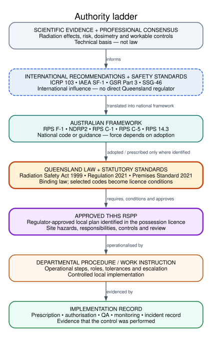
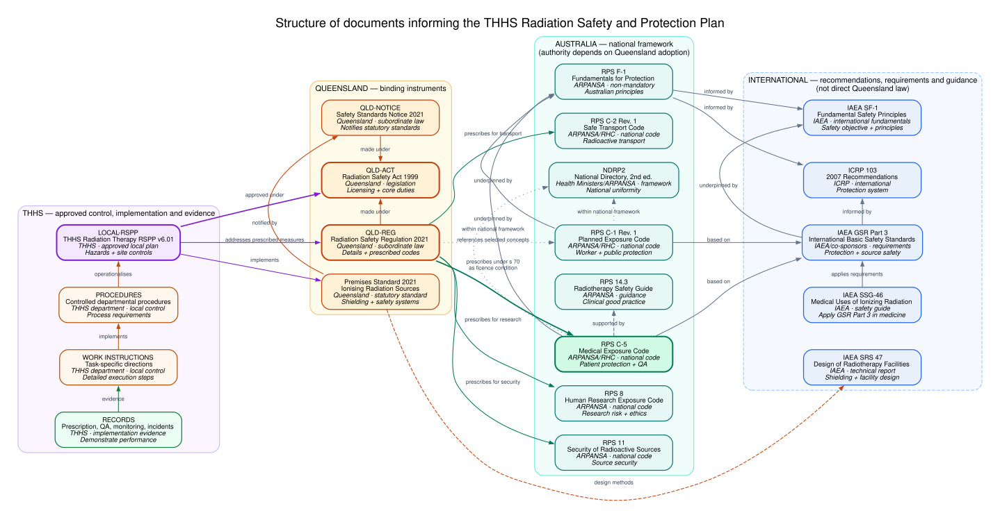
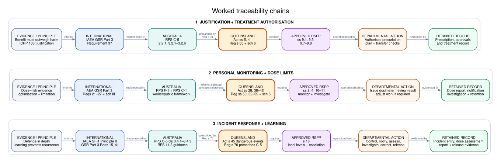

THHS Radiation Therapy RSPP: Upstream Traceability Map
Table of Contents
Purpose and reading rule
This map traces high-value controls in the THHS Radiation Safety and Protection Plan for Radiation Therapy Practices, Version 6.0 - Revision 1 (v6.01), to their principal upstream sources.
It is not a single chain in which every upstream publication directly regulates THHS. Read it as a hierarchy of different kinds of authority:
- Scientific evidence and professional consensus explain radiation effects and workable safety controls.
- International recommendations (for example ICRP) and international safety standards and guidance (for example IAEA) influence national frameworks but do not directly regulate a Queensland hospital.
- Australian fundamentals, codes and guidance provide nationally agreed principles and requirements. They acquire Queensland legal force only where Queensland legislation adopts or incorporates them, a licence makes them a condition, or another identified legal mechanism applies.
- Queensland Acts and subordinate legislation are legally binding. Minister-made radiation safety standards notified under the Act set statutory minimum safety criteria.
- Possession/use licences, approvals and their conditions are enforceable. Of particular importance, the Code for Radiation Protection in Medical Exposure (RPS C-5) is prescribed for human diagnostic and therapeutic practices and is therefore a standard condition of the relevant Queensland possession and use licences (Act s 75(3); Regulation s 70(1), item 2).
- The approved local RSPP converts the applicable law, licence conditions, hazards and selected good practice into site-specific controls. Departmental procedures and work instructions operationalise it; records demonstrate implementation.
Terms such as must, limit and required below are source-scoped. A guide or recommendation is not labelled law unless the adoption mechanism is identified.
Authority classes used in this map
| Class | Meaning in this project |
|---|---|
| Legally binding legislation | An Act of the Queensland Parliament. |
| Subordinate legislation | A regulation or notice made under an Act. |
| Statutory radiation-safety standard | A Queensland standard made and notified under Act s 16; compliance is required through Act ss 17–20. |
| Enforceable licence or approval condition | A condition imposed directly or by Act s 75 and Regulation s 70; contravention is addressed by Act s 77. |
| Approved local plan | The possession licensee's regulator-approved RSPP identified in its possession licence. |
| National code capable of jurisdictional adoption | An ARPANSA/Radiation Health Committee code that requires an adoption mechanism to have force in Queensland. |
| Non-mandatory guidance or recommendation | Guidance supporting good practice; not independently binding. |
| International safety requirement or guide | IAEA requirement or guidance for national implementation; not direct Queensland law. |
| Technical evidence or professional consensus | Scientific evidence, recommendations or professional practice supporting the control. |
Visual prototypes
The diagrams deliberately use different visual language for different authority classes. Blue international nodes are influential but not direct Queensland regulation; teal Australian nodes require an identified adoption mechanism; orange Queensland nodes are binding instruments; purple is the approved local RSPP; green is retained evidence.
All three prototypes have editable Graphviz source and rendered SVG output in figures/. The source blocks below reproduce the checked SVGs using Graphviz through Nix.
Prototype A: authority ladder
This is the clearest one-page explanation of how evidence and recommendations become local practice without pretending there is a single direct legislative chain.
- Editable source: authority-ladder.dot
- Rendered figure: authority-ladder.svg

nix shell nixpkgs#graphviz --command dot \
-Tsvg figures/authority-ladder.dot \
-o figures/authority-ladder.svg

Figure 1: Prototype A. Authority ladder from evidence to implementation record. The move from Australian framework to Queensland law is explicitly conditional on adoption or prescription.
Document relationship network
This network is the detailed upstream reference view. Read it from left to right: THHS local control → Queensland binding instruments → Australian framework → international recommendations and standards. Direct RSPP-to-Australian and RSPP-to-international edges are omitted; a publication cited by the RSPP does not thereby become an independent source of authority. The Regulation instead links to the national codes it prescribes or references, and those codes link to their broader foundations. Dashed or dotted relationships show guidance, technical context or partial reference rather than direct legal adoption.
- Editable source: document-relationship-network.dot
- Rendered figure: document-relationship-network.svg
- Interactive explorer: open the clickable document network
- Explorer notes and rebuild instructions: interactive-network/README.org

nix shell nixpkgs#graphviz --command dot \
-Tsvg figures/document-relationship-network.dot \
-o figures/document-relationship-network.svg

Figure 2: Left-to-right upstream trace from THHS through Queensland and the Australian framework to international sources. The dashed premises-standard–IAEA SRS 47 link shows technical context, not direct adoption or regulation.
Prototype C: worked traceability chains
The three lanes show how the same hierarchy is applied to a patient control, a worker/public protection control and an incident-learning control. Each ends in a retained record rather than stopping at policy.
- Editable source: worked-traceability-chains.dot
- Rendered figure: worked-traceability-chains.svg

nix shell nixpkgs#graphviz --command dot \
-Tsvg figures/worked-traceability-chains.dot \
-o figures/worked-traceability-chains.svg

Figure 3: Prototype C. Worked chains for treatment justification, personal monitoring and incident response. The personal-monitoring lane says “informs; selected concepts referenced” rather than claiming wholesale Queensland adoption of RPS C-1.
Recommendation
Use Prototype A, the authority ladder, as the project’s main overview figure. It communicates the most important interpretive rule at a glance: influence is not the same as legal authority, and local compliance must end in evidence. Use Prototype C immediately after it as the practical worked example. Keep the document relationship network as a detailed reference figure because it contains more document-level information than is comfortable for an opening overview.
Document register
Most entries were checked against official publisher or legislation pages on 2026-09-16; the Queensland premises standard was checked again on 2026-09-29. “Current” means current on that official page, not that every clause has been independently compared with the THHS licence.
Documents are grouped by jurisdiction. Within each entry, the definition-list fields separate legal status, clinical relevance and currency so they can be read vertically without horizontal scrolling.
THHS / local
- LOCAL-RSPP — Radiation Safety and Protection Plan for Radiation Therapy Practices, Version 6.0 - Revision 1
- Issuing body
- Townsville Hospital and Health Service (THHS)
- Jurisdiction
- THHS/local
- Document type
- Approved local plan
- Authority / legal power
- Approved under the Radiation Safety Act 1999 and identified in the possession licence
- Radiation-therapy relevance
- Local hazards, roles, training, safe work, QA, monitoring, records, source lifecycle and incidents
- Relationship to the RSPP
- Immediate operational authority mapped in this document
- Official source
- local controlled source copy
- Currency / version checked
- v6.01; supplied project source
Queensland statutory framework
- QLD-ACT — Radiation Safety Act 1999
- Issuing body
- Queensland Parliament
- Jurisdiction
- Queensland
- Document type
- Act
- Authority / legal power
- Legally binding legislation
- Radiation-therapy relevance
- Licensing; statutory standards; RSPPs; RSO; monitoring; prescription; exposure; source lifecycle; dangerous events
- Relationship to the RSPP
- Primary legislative basis for the RSPP and possession/use controls
- Official source
- Queensland Legislation
- Currency / version checked
- Reprint current from 23 Sep 2025; checked 2026-09-16
- QLD-REG — Radiation Safety Regulation 2021
- Issuing body
- Queensland Governor in Council
- Jurisdiction
- Queensland
- Document type
- Regulation
- Authority / legal power
- Subordinate legislation made under QLD-ACT
- Radiation-therapy relevance
- Prescribed RSPP measures; certificate periods; dose limits; authorised prescribers; standard licence conditions
- Relationship to the RSPP
- Supplies detailed requirements and makes selected ARPANSA codes standard licence conditions
- Official source
- Queensland Legislation
- Currency / version checked
- Reprint current from 1 Oct 2025; checked 2026-09-16
- QLD-NOTICE — Radiation Safety (Radiation Safety Standards) Notice 2021
- Issuing body
- Queensland Minister for Health
- Jurisdiction
- Queensland
- Document type
- Statutory notice
- Authority / legal power
- Subordinate legislation under QLD-ACT s 16
- Radiation-therapy relevance
- Identifies the five current Queensland radiation safety standards
- Relationship to the RSPP
- Makes the premises and medical-imaging standards statutory standards
- Official source
- Queensland Legislation
- Currency / version checked
- Commenced 1 Sep 2021; checked 2026-09-16
- QLD-PREMISES — Standard for premises—ionising radiation sources (2021)
- Issuing body
- Queensland Health
- Jurisdiction
- Queensland
- Document type
- Radiation safety standard
- Authority / legal power
- Statutory standard made under QLD-ACT s 16; compliance/certification through ss 17–20
- Radiation-therapy relevance
- General area-dose, warning and RSO-contact tests (s 2.1); radiation-therapy room safety systems (s 3.3); HDR/PDR remote-afterloading room tests (s 3.4)
- Relationship to the RSPP
- Direct basis for compliant premises and retained certificates
- Title note
- “PR100” belongs to older editions; the official 2021 title and Standards Notice do not use that designation. The supplied controlled RSPP still uses “PR100:2021”.
- Official source
- Queensland Health PDF
- Summary
- Queensland premises standard summary
- Currency / version checked
- Made 13 Aug 2021; expires 31 Aug 2031; official PDF checked online 2026-09-29
- QLD-MI — Standard for ionising radiation apparatus—medical imaging (2021)
- Issuing body
- Queensland Health
- Jurisdiction
- Queensland
- Document type
- Radiation safety standard
- Authority / legal power
- Statutory standard made under QLD-ACT s 16; compliance/certification through ss 17–20
- Radiation-therapy relevance
- Minimum performance for imaging apparatus, including radiotherapy treatment-planning imaging; excludes treatment-delivery systems
- Relationship to the RSPP
- Direct for covered imaging apparatus; not a treatment-machine performance standard
- Official source
- Queensland Health standards page
- Currency / version checked
- 2021; checked 2026-09-16
Australian codes, fundamentals and framework
- RPS-C5 — Code for Radiation Protection in Medical Exposure (2019), Radiation Protection Series C-5
- Issuing body
- ARPANSA and Radiation Health Committee
- Jurisdiction
- Australia; adopted in Queensland for specified practices
- Document type
- National code
- Authority / legal power
- Enforceable standard licence condition for human diagnostic/therapeutic possession and use: QLD-ACT s 75(3), QLD-REG s 70(1) item 2
- Radiation-therapy relevance
- Justification, optimisation, medical-physics oversight, calibration, acceptance/commissioning, QA, planning, incidents, records and research exposure
- Relationship to the RSPP
- Principal Australian medical-exposure requirements upstream of many clinical controls
- Official source
- ARPANSA
- Currency / version checked
- July 2019; current page checked 2026-09-16
- RPS-8 — Code of Practice for the Exposure of Humans to Ionizing Radiation for Research Purposes (2005), Radiation Protection Series No. 8
- Issuing body
- ARPANSA
- Jurisdiction
- Australia; adopted in Queensland for specified practice
- Document type
- National code
- Authority / legal power
- Enforceable standard licence condition for human radiation research: QLD-ACT s 75(3), QLD-REG s 70(1) item 5
- Radiation-therapy relevance
- Radiation risk assessment, information/consent and HREC review of research exposure
- Relationship to the RSPP
- Direct upstream basis for local ROMP assessment plus ethics approval
- Official source
- ARPANSA
- Currency / version checked
- 2005; Annex 4 removed Jan 2015; checked 2026-09-16
- RPS-11 — Code of Practice for the Security of Radioactive Sources (2019), Radiation Protection Series No. 11
- Issuing body
- ARPANSA
- Jurisdiction
- Australia; adopted in Queensland for security enhanced sources
- Document type
- National code
- Authority / legal power
- Enforceable standard licence condition where the practice involves a security enhanced source: QLD-ACT s 75(3), QLD-REG s 70(1) item 7
- Radiation-therapy relevance
- Source categorisation, security culture, access, inventory and response
- Relationship to the RSPP
- Direct for security-enhanced HDR sources, alongside the approved security plan
- Official source
- ARPANSA
- Currency / version checked
- 2019 electronic edition; checked 2026-09-16
- RPS-C2 — Code for the Safe Transport of Radioactive Material (2019), Radiation Protection Series C-2 (Rev. 1)
- Issuing body
- ARPANSA and Radiation Health Committee
- Jurisdiction
- Australia; adopted in Queensland for transport
- Document type
- National code adopting IAEA SSR-6 (Rev. 1)
- Authority / legal power
- Standard transport-licence condition: QLD-ACT s 75(4), QLD-REG s 70(2)(a)
- Radiation-therapy relevance
- Packages, consignor/carrier controls, documentation and transport safety
- Relationship to the RSPP
- Direct for transport of HDR sources; separate security-plan requirements may also apply
- Official source
- ARPANSA
- Currency / version checked
- 2019 Rev. 1; checked 2026-09-16
- RPS-C1 — Code for Radiation Protection in Planned Exposure Situations (2020), Radiation Protection Series C-1 (Rev. 1)
- Issuing body
- ARPANSA and Radiation Health Committee
- Jurisdiction
- Australia/model national framework
- Document type
- National code capable of jurisdictional adoption
- Authority / legal power
- Not identified here as a wholesale standard condition for Queensland radiation therapy; QLD-REG expressly uses it for selected dose concepts/calculations
- Radiation-therapy relevance
- Occupational/public/environmental protection; design, procedures, training, optimisation and dose limitation
- Relationship to the RSPP
- National basis for worker/public controls; use Queensland provisions for the binding rule
- Official source
- ARPANSA
- Currency / version checked
- 2020 Rev. 1; checked 2026-09-16
- RPS-F1 — Fundamentals for Protection Against Ionising Radiation (2014), Radiation Protection Series F-1
- Issuing body
- ARPANSA
- Jurisdiction
- Australia
- Document type
- National fundamentals
- Authority / legal power
- Non-mandatory; top tier of the national framework
- Radiation-therapy relevance
- Effects and risks; ten principles of protection, safety and security
- Relationship to the RSPP
- Explains the principles beneath codes, legislation and the RSPP
- Official source
- ARPANSA
- Currency / version checked
- 2014; checked 2026-09-16
- NDRP2 — National Directory for Radiation Protection, 2nd ed. (2021)
- Issuing body
- ARPANSA; endorsed by Australian Health Ministers
- Jurisdiction
- Australia
- Document type
- National regulatory framework
- Authority / legal power
- Agreed statements for adoption by jurisdictions; not self-executing law
- Radiation-therapy relevance
- National uniformity in radiation regulation
- Relationship to the RSPP
- Context for the Queensland framework; no blanket Queensland adoption is assumed
- Official source
- ARPANSA
- Currency / version checked
- 2nd ed., 2021; checked 2026-09-16
- RPS-14.3 — Safety Guide for Radiation Protection in Radiotherapy (2008), Radiation Protection Series 14.3
- Issuing body
- ARPANSA
- Jurisdiction
- Australia
- Document type
- Safety guide
- Authority / legal power
- Non-mandatory guidance; currently supports implementation of RPS C-5
- Radiation-therapy relevance
- Practical radiotherapy protection, equipment, QA and incident prevention
- Relationship to the RSPP
- Professional/practical basis for detailed local controls; not independently law
- Official source
- ARPANSA
- Currency / version checked
- 2008; Annex L removed Jan 2015; current support status checked 2026-09-16
International recommendations and standards
- ICRP-103 — The 2007 Recommendations of the International Commission on Radiological Protection, ICRP Publication 103
- Issuing body
- ICRP
- Jurisdiction
- International
- Document type
- Recommendation / professional consensus
- Authority / legal power
- Non-mandatory recommendation
- Radiation-therapy relevance
- Evidence-informed system of justification, optimisation and dose limitation; planned/emergency/existing exposures
- Relationship to the RSPP
- Scientific and conceptual influence on IAEA and Australian frameworks
- Official source
- ICRP
- Project summary
- Concise ICRP Publication 103 summary
- Currency / version checked
- 2007 recommendations remain in use while revision is in progress; checked 2026-09-17
- IAEA-SF1 — Fundamental Safety Principles, IAEA Safety Standards Series No. SF-1
- Issuing body
- IAEA and co-sponsors
- Jurisdiction
- International
- Document type
- Safety fundamentals
- Authority / legal power
- International principles for national implementation; not direct Queensland law
- Radiation-therapy relevance
- Fundamental safety objective and ten principles
- Relationship to the RSPP
- Conceptual influence on RPS F-1 and the wider framework
- Official source
- IAEA Safety Standards e-versions
- Currency / version checked
- 2006; current e-version listed 2026-07-21
- IAEA-GSR3 — Radiation Protection and Safety of Radiation Sources: International Basic Safety Standards, General Safety Requirements Part 3
- Issuing body
- IAEA and co-sponsors
- Jurisdiction
- International
- Document type
- General safety requirements
- Authority / legal power
- International requirements for national implementation; not direct Queensland law
- Radiation-therapy relevance
- Responsibilities, planned exposures, occupational/public/medical exposure, emergency preparedness
- Relationship to the RSPP
- Principal international requirements reflected in RPS C-1 and RPS C-5
- Official source
- IAEA
- Currency / version checked
- 2014; e-version listed 2026-07-21
- IAEA-SSG46 — Radiation Protection and Safety in Medical Uses of Ionizing Radiation, Specific Safety Guide No. SSG-46
- Issuing body
- IAEA
- Jurisdiction
- International
- Document type
- Specific safety guide
- Authority / legal power
- Non-binding international guidance
- Radiation-therapy relevance
- Application of GSR Part 3 to medical exposure, including radiotherapy
- Relationship to the RSPP
- Detailed international influence on clinical governance and safety practice
- Official source
- IAEA
- Currency / version checked
- 2018; checked 2026-09-16
- IAEA-SRS47 — Radiation Protection in the Design of Radiotherapy Facilities, Safety Reports Series No. 47
- Issuing body
- IAEA
- Jurisdiction
- International
- Document type
- Technical safety report
- Authority / legal power
- Non-binding technical guidance
- Radiation-therapy relevance
- Shielding design, safety systems and facility verification
- Relationship to the RSPP
- Technical support for premises design; the Queensland 2021 premises standard and its certificate remain the immediate statutory basis
- Official source
- IAEA PDF
- Currency / version checked
- 2006; checked 2026-09-16
High-value practice traceability map
The “Local implementation / evidence” field names the control and the record that should demonstrate it. It does not disclose security-sensitive locations, source identifiers, contacts or detailed recovery instructions.
Each numbered practice is followed by the same six traceability fields. This makes the direction of traceability visible from Queensland authority through broader influences to local evidence, while keeping the authority qualification beside the practice.
- Possession licences, use licences and individual authorisation
- Immediate Queensland basis
- QLD-ACT ss 12–13 require possession/use licences; s 43(4) requires the possession licensee to prevent unauthorised use. Licence conditions apply under ss 75–77.
- Main Australian basis
- RPS C-5 cl 3.5.2 requires applicable licences/permits and competent personnel.
- Principal international influence
- IAEA-GSR3 requirements for notification/authorisation and responsible parties.
- Scientific / professional basis
- Competence and clear control of source custody reduce error and uncontrolled exposure.
- Local implementation / evidence
- RSPP ss 3, 6–8; current licences, local authorisation/credentialing list and training records.
- Authority note
- Licences are statutory; THHS individual authorisation/credentialing is a local control and may also evidence licence/RSPP compliance.
- Approved RSPP and compliance with it
- Immediate Queensland basis
- QLD-ACT ss 28–34 define, approve/change and require access/training for the plan; ss 43(3), 44(3) connect compliance with protection obligations; possession licence identifies the approved plan (s 66).
- Main Australian basis
- RPS C-5 cls 3.5.5–3.5.6 and Schedule A require and implement a Radiation Management Plan.
- Principal international influence
- IAEA-GSR3 management-system and local-rules requirements.
- Scientific / professional basis
- Risk controls are reliable only when hazards, responsibilities, review and training are documented and implemented.
- Local implementation / evidence
- Controlled approved RSPP, availability/read acknowledgement, annual review/audit and approved amendment record.
- Authority note
- The approved RSPP is legally significant; departmental documents beneath it do not replace it.
- Radiation governance: possession licensee, RSO, RSC and RSWG
- Immediate Queensland basis
- QLD-ACT ss 35–37 require a qualified RSO and minimum functions; s 43 places duties on the possession licensee.
- Main Australian basis
- RPS C-5 assigns the Responsible Person, practitioner, operator and medical physicist; RPS C-1 supports radiation-protection roles.
- Principal international influence
- IAEA-GSR3 requirements on prime responsibility, protection officers/experts and management systems.
- Scientific / professional basis
- Multidisciplinary oversight, independent advice and escalation strengthen safety culture.
- Local implementation / evidence
- RSPP ss 3–5; appointment/certificate, committee terms of reference, minutes, RSO reports and annual report.
- Authority note
- The RSO role is statutory. The RSC and RSWG are local governance controls, not verbatim statutory bodies under QLD-ACT.
- Justification and an approved treatment prescription
- Immediate Queensland basis
- QLD-ACT s 5 (justification); s 41(1)–(3) requires an authorised prescriber and delivery compliant with the prescription; QLD-REG s 65 and sch 6 pt 2 identify authorised persons.
- Main Australian basis
- RPS C-5 cls 2.2.1, 3.1 and 3.2.1–3.2.6.
- Principal international influence
- IAEA-GSR3 Requirements 35 and 37; IAEA-SSG46.
- Scientific / professional basis
- ICRP-103 justification; therapeutic benefit must outweigh detriment for the individual exposure.
- Local implementation / evidence
- RSPP ss 1, 9.1, 9.5, 9.7–9.8; approved prescription, plan approval, identity/site checks and treatment record.
- Authority note
- Direct statutory and licence-condition basis.
- Optimisation and ALARA
- Immediate Queensland basis
- QLD-ACT s 5 defines optimisation/ALARA; s 37(2)(a),(c) gives RSO functions; ss 43–44 require reasonable protective steps.
- Main Australian basis
- RPS C-5 cls 2.2.2 and 3.2.7–3.2.22; RPS C-1 for occupational/public exposures; RPS-F1 principles.
- Principal international influence
- IAEA-GSR3 Requirements 11 and 38; IAEA-SSG46.
- Scientific / professional basis
- ICRP-103 optimisation and risk/detriment framework.
- Local implementation / evidence
- RSPP ss 1–2, 4, 9 and 15; optimised plan and imaging protocols, QA, review and documented exceptions.
- Authority note
- Direct principle; the detailed local methods are risk controls chosen to meet it.
- Occupational, public and pregnancy dose limits
- Immediate Queensland basis
- QLD-ACT ss 41(5), 42 and 42A; QLD-REG ss 52–59 and sch 5: adult occupational effective dose averages 20 mSv/y over 5 years and must not exceed 50 mSv in any 12 months; adult lens 20 mSv/y averaged over 5 years and 50 mSv maximum in any 12 months; adult skin/hands/feet 500 mSv/12 months. Public limits are 1 mSv effective, 15 mSv lens and 50 mSv skin in 12 months. Where pregnancy is known or ought reasonably be known, the effective-dose limit is 1 mSv for the remainder of pregnancy.
- Main Australian basis
- RPS C-1 (planned occupational/public exposure); RPS C-5 expressly excludes patient therapeutic exposure from dose limits.
- Principal international influence
- IAEA-GSR3 sch III and Requirements 21–25; IAEA-SSG46.
- Scientific / professional basis
- ICRP-103 system of limitation; embryo/fetus protection.
- Local implementation / evidence
- RSPP ss 2, 4, 9.1 and 10; classification, work review, pregnancy assessment, monitor results and dose investigation records.
- Authority note
- These are limits, not routine design targets. Patient therapeutic exposure is governed by justification, optimisation and prescription, not occupational/public limits.
- Premises shielding, compliance certification and access controls
- Immediate Queensland basis
- QLD-ACT ss 16–20 require compliance and certificates; QLD-REG s 8(2) gives a 5-year premises certificate period; QLD-NOTICE lists the Standard for premises—ionising radiation sources (2021), with general s 2.1 and practice-specific ss 3.3–3.4 tests.
- Main Australian design context
- RPS C-1 planned-exposure facility design/access principles; RPS 14.3 radiotherapy shielding and room-design guidance; RPS C-5 medical facility/equipment and QA requirements for relevant licence holders.
- Principal international design context
- IAEA-GSR3 safety assessment and prevention/mitigation; IAEA-SSG46 medical-facility planning; IAEA-SRS47 radiotherapy shielding methods. These are technical/contextual relationships, not proven textual ancestry of the Queensland standard.
- Scientific / professional basis
- Shielding calculations based on energy, workload, use/occupancy and design constraints.
- Local implementation / evidence
- RSPP ss 7 and 13; design assessment, certificate of compliance, surveys, access records and reassessment after material change.
- Authority note
- The 2021 premises standard is a statutory minimum. Its Type 1/2/3 weekly dose tests are premises criteria, distinct from public/worker dose limits and prospective shielding design goals. Design assumptions and departmental access methods are local implementation.
- Safety systems, interlocks, warning systems and defence in depth
- Immediate Queensland basis
- QLD-ACT ss 17, 43–44 plus 2021 premises standard ss 3.3–3.4 safety-system tests; approved RSPP hazard controls under s 28.
- Main Australian basis
- RPS C-5 cl 3.4.1 and Schedule A; RPS 14.3 practical guidance.
- Principal international influence
- IAEA-SF1 Principle 8; IAEA-GSR3 prevention/mitigation; IAEA-SSG46.
- Scientific / professional basis
- Human-factors engineering and multiple independent barriers reduce single-failure risk.
- Local implementation / evidence
- RSPP ss 9.3, 9.8–9.9, 12–13; daily safety checks, interlock/warning tests, fault/override records and periodic verification.
- Authority note
- Some devices are required by the 2021 premises standard; the complete defence-in-depth arrangement is a local risk control.
- Acceptance testing, commissioning and independent output verification
- Immediate Queensland basis
- QLD-ACT s 75(3) + QLD-REG s 70(1) item 2 make RPS C-5 a licence condition; QLD-ACT ss 17–20 apply where a statutory source/premises standard covers the item.
- Main Australian basis
- RPS C-5 cls 3.1.4(c), 3.2.13 and 3.2.17 require medical-physics oversight, commissioning, QA and independent external-beam verification.
- Principal international influence
- IAEA-GSR3 Requirement 38; IAEA-SSG46.
- Scientific / professional basis
- Traceable dosimetry, independent measurement and end-to-end testing detect systematic calibration/configuration error.
- Local implementation / evidence
- RSPP ss 9.2 and 15; acceptance/commissioning report, calibration record, independent verification/audit and formal clinical release.
- Authority note
- Direct RPS C-5 licence-condition basis; the chosen test suite and tolerances remain source/professional/local scoped.
- Quality management, QA, QC and controlled records
- Immediate Queensland basis
- QLD-ACT s 28 requires measures and review; s 43 protection duty; RPS C-5 is a standard licence condition as above.
- Main Australian basis
- RPS C-5 cls 3.2.17–3.2.19 and 3.5.3; RPS 14.3 guidance.
- Principal international influence
- IAEA-GSR3 Requirements 5 and 38; IAEA-SSG46.
- Scientific / professional basis
- Process control, metrological traceability, trend review and corrective action manage systematic and random error.
- Local implementation / evidence
- RSPP ss 15–16; controlled procedures/forms, schedule, QC results, trend/non-conformance review, calibration and maintenance history.
- Authority note
- RPS C-5 requires the programme and records; local procedures set the detailed implementation.
- Independent plan/MU checks and patient-specific verification
- Immediate Queensland basis
- RPS C-5 standard licence condition; QLD-ACT s 41(3) requires dose/way of delivery to comply with prescription.
- Main Australian basis
- RPS C-5 cl 3.2.20(d) explicitly requires patient-specific independent MU or treatment-time calculations; RPS 14.3 supports detailed practice.
- Principal international influence
- IAEA-SSG46; IAEA-GSR3 Requirement 38.
- Scientific / professional basis
- Independent algorithms/review and measurement reduce correlated planning and transfer failures.
- Local implementation / evidence
- RSPP s 9.7; independent MU/dose check, ROMP review, patient-specific dosimetry and recorded authorisation before treatment.
- Authority note
- Independent MU/time calculation has a direct code basis; modality-specific measurement is a risk-graded professional/local control unless otherwise conditioned.
- OIMS access, data-transfer integrity, upgrades and change control
- Immediate Queensland basis
- QLD-ACT ss 41(3), 43–44; RPS C-5 licence condition, especially QA after software installation/modification.
- Main Australian basis
- RPS C-5 cls 3.2.17(a)(iv), (e), 3.2.20(c) and Schedule A; RPS 14.3.
- Principal international influence
- IAEA-GSR3 Requirement 38; IAEA-SSG46 software, records and medical-exposure safety guidance.
- Scientific / professional basis
- Configuration management, access control and independent transfer verification address systematic digital-pathway risk.
- Local implementation / evidence
- RSPP s 9.5; role-based access list, transfer check, upgrade acceptance report, change approval, override and incident records.
- Authority note
- The Act does not name OIMS. These are local controls implementing prescription, code and general safety duties.
- Training, supervision, competence and credentialing
- Immediate Queensland basis
- QLD-ACT ss 33–34 require RSPP training; ss 35–37 cover qualified RSO/training functions; s 43(4) controls authorised use.
- Main Australian basis
- RPS C-5 cls 3.1.4(b), 3.5.2 and 3.5.6(b); RPS C-1 worker information/training.
- Principal international influence
- IAEA-GSR3 Requirements 13 and 26; IAEA-SSG46.
- Scientific / professional basis
- Competence, supervised practice and refreshers are human-factors barriers.
- Local implementation / evidence
- RSPP ss 6–8 and training attachments; induction acknowledgment, annual training, competency assessment, credential and supervision record.
- Authority note
- Training has direct statutory/code support. The departmental credentialing scheme is a local, risk-based assurance control.
- Personal monitoring, investigation and exposure records
- Immediate Queensland basis
- QLD-ACT s 28(3), ss 38–40; QLD-REG s 50 specifies record content; dose limits in ss 52–59/sch 5.
- Main Australian basis
- RPS C-1 occupational monitoring and investigation; RPS C-5 does not govern occupational exposure.
- Principal international influence
- IAEA-GSR3 Requirements 24–27; occupational guidance including IAEA GSG-7.
- Scientific / professional basis
- Dosimetry verifies optimisation/limits and supports abnormal-result investigation and longitudinal records.
- Local implementation / evidence
- RSPP ss 4 and 10–11; issue/return register, dose reports, worker notification, investigation and record retention (later of 30 years after last assessment or age 75 under Act s 38(6)).
- Authority note
- Direct statutory basis.
- Maintenance, fault response and formal ROMP release
- Immediate Queensland basis
- QLD-ACT ss 43–45; RPS C-5 standard licence condition requires QA after maintenance/software change and repair/maintenance records.
- Main Australian basis
- RPS C-5 cls 3.2.13(b), 3.2.17(a)(iii)–(iv),(e)–(f); RPS 14.3.
- Principal international influence
- IAEA-GSR3 prevention, maintenance and verification requirements; IAEA-SSG46.
- Scientific / professional basis
- Post-maintenance testing prevents latent calibration/configuration errors; separation of service and clinical-release authority is defence in depth.
- Local implementation / evidence
- RSPP ss 9.2, 9.4 and 14; fault/work record, post-service QC, restriction status and signed ROMP release.
- Authority note
- Formal ROMP release is a strong local control implementing the code/general duties; vendor release alone is not the local clinical authorisation.
- Incident reporting, dose assessment, learning and regulatory notification
- Immediate Queensland basis
- QLD-ACT s 45 requires immediate notice of defined dangerous events and written confirmation within 7 days after oral notice; RPS C-5 standard licence condition covers unintended/accidental medical exposure.
- Main Australian basis
- RPS C-5 cls 3.4.1–3.4.3 and 3.5.3; RPS 14.3 guidance.
- Principal international influence
- IAEA-GSR3 Requirements 15 and 41; IAEA-SSG46.
- Scientific / professional basis
- Prospective risk reduction plus investigation, dose reconstruction and shared learning prevent recurrence.
- Local implementation / evidence
- RSPP ss 6 and 18; make safe, notify ROMP/RSO, dose/clinical assessment, OIMS incident entry, investigation, corrective action, regulator report where required and return-to-service record.
- Authority note
- Not every near miss is a statutory dangerous event. Local reporting is deliberately broader; statutory notification follows the Act/licence threshold, not local incident level alone.
- HDR source inventory, security, transport and emergency arrangements
- Immediate Queensland basis
- QLD-ACT ss 34A–34P, 44A–45; QLD-REG s 7 defines security-enhanced categories; s 70 prescribes RPS-11 and RPS-C2 as licence conditions where applicable.
- Main Australian basis
- RPS-11 (security); RPS-C2 (transport); RPS C-5/RPS 14.3 (clinical HDR safety).
- Principal international influence
- IAEA Code of Conduct on Safety and Security of Radioactive Sources; IAEA SSR-6; IAEA-GSR3/SSG46.
- Scientific / professional basis
- Source accountability, access control, package integrity, survey capability and rehearsed contingency response.
- Local implementation / evidence
- RSPP ss 9.9, 11–12 and 17–18; controlled inventory, receipt/transfer records, security/transport-plan evidence, training/drill and survey records.
- Authority note
- Direct statutory/licence-condition basis. Security-sensitive details and detailed recovery instructions stay in controlled documents, not this map.
- Acquisition, supply, relocation and disposal
- Immediate Queensland basis
- QLD-ACT ss 23–27A require acquisition/relocation approvals, restrict supply/disposal and prohibit abandonment; licence/approval conditions also apply.
- Main Australian basis
- NDRP2 national framework; RPS-C2 for transport; applicable disposal code/approval as specified by regulator.
- Principal international influence
- IAEA-GSR3 source lifecycle; IAEA SSR-6 for transport.
- Scientific / professional basis
- Cradle-to-grave control prevents orphan sources and uncontrolled exposure.
- Local implementation / evidence
- RSPP ss 3 and 17; approval, recipient licence check, inventory update, transfer/transport/disposal certificate and regulator notice.
- Authority note
- Direct statutory basis; the exact approval depends on the transaction and source.
- Research exposure assessment and ethics approval
- Immediate Queensland basis
- QLD-ACT s 75(3) + QLD-REG s 70(1) item 5 make RPS-8 a standard licence condition for human radiation research; item 2 also makes RPS C-5 applicable to medical exposure.
- Main Australian basis
- RPS-8; RPS C-5 cls 3.2.6 and 3.2.21 require HREC approval and research dose constraints/optimisation; National Statement on Ethical Conduct in Human Research.
- Principal international influence
- IAEA-GSR3 medical research requirements; IAEA-SSG46.
- Scientific / professional basis
- Ethical justification, informed consent, independent review and prospective dose/risk assessment.
- Local implementation / evidence
- RSPP s 9.12; protocol, ROMP radiation-risk/dose assessment, HREC approval, consent/information and exposure record.
- Authority note
- Direct licence-condition basis for the codes; the ROMP workflow is local implementation.
Principal relationship chains
These chains state the strongest evidenced route without implying that every upstream source is directly enforceable.
Medical exposure and treatment delivery
ICRP-103 recommendations → inform IAEA-GSR3 medical-exposure requirements → implemented nationally in RPS-C5 → prescribed by QLD-REG s 70(1) item 2 as a standard licence condition under QLD-ACT s 75(3) → implemented in the approved LOCAL-RSPP → operationalised through departmental procedures, checks and authorisations → evidenced by prescription, planning, QA and treatment records.
Premises
International/professional shielding methods, including IAEA-SRS47, provide design techniques → apply the separate Queensland Standard for premises—ionising radiation sources (2021) tests → the premises standard is notified under QLD-ACT s 16 by QLD-NOTICE → compliance and certification required by QLD-ACT ss 17–20 → implemented in LOCAL-RSPP access/safety-system controls → evidenced by design reports, surveys, test results and the current certificate of compliance.
Occupational and public protection
ICRP-103 → IAEA-GSR3 → RPS-F1/RPS-C1 and the Australian framework → Queensland-specific duties and limits in QLD-ACT/QLD-REG → LOCAL-RSPP monitoring, access and investigation controls → evidenced by monitoring, training, survey and investigation records.
Adoption and currency findings
- Confirmed adoption: RPS C-5, RPS-8, RPS-11 and RPS-C2 have identified Queensland licence-condition mechanisms for the practices described above (QLD-ACT s 75; QLD-REG s 70).
- No blanket adoption claimed: NDRP2, RPS-F1, RPS-C1, RPS-14.3, ICRP and IAEA publications are not treated as directly binding merely because the RSPP cites or follows them. Specific Queensland cross-references, licence conditions and approved-plan commitments may still give particular provisions operational or legal significance.
- Treatment-delivery apparatus: the 2021 Queensland medical-imaging apparatus standard expressly includes radiotherapy treatment-planning systems but excludes radiotherapy treatment-delivery systems. Treatment-machine acceptance, commissioning, calibration and QA are therefore traced principally through RPS C-5 as a licence condition, the approved RSPP and professional standards—not incorrectly through that imaging-apparatus standard.
- Local controls: RSC/RSWG governance, patient-specific measurement, detailed OIMS permissions and formal ROMP clinical release are often stronger and more specific than the wording of the Act. They are identified as local risk controls implementing broader statutory/code duties.
Questions to resolve in the next pass
- Check the actual THHS possession and use licence schedules for any site-specific conditions beyond the standard conditions. Those instruments are not in the project and this map does not infer their contents.
- Confirm whether a separate current Queensland treatment-delivery apparatus standard or regulator-approved QA programme applies to any THHS device; none is identified in the 2021 Standards Notice list.
- Add paragraph-level cross-references from IAEA-SSG46 and RPS-14.3 after those source texts are added to the local source corpus.
- Check current departmental procedures/work instructions to replace generic record labels with exact controlled document names, without copying security-sensitive content into the study file.